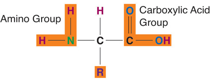
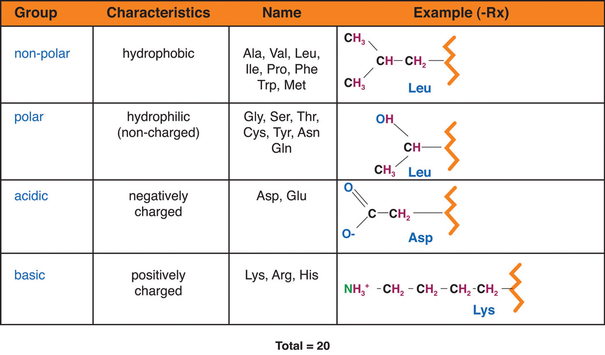
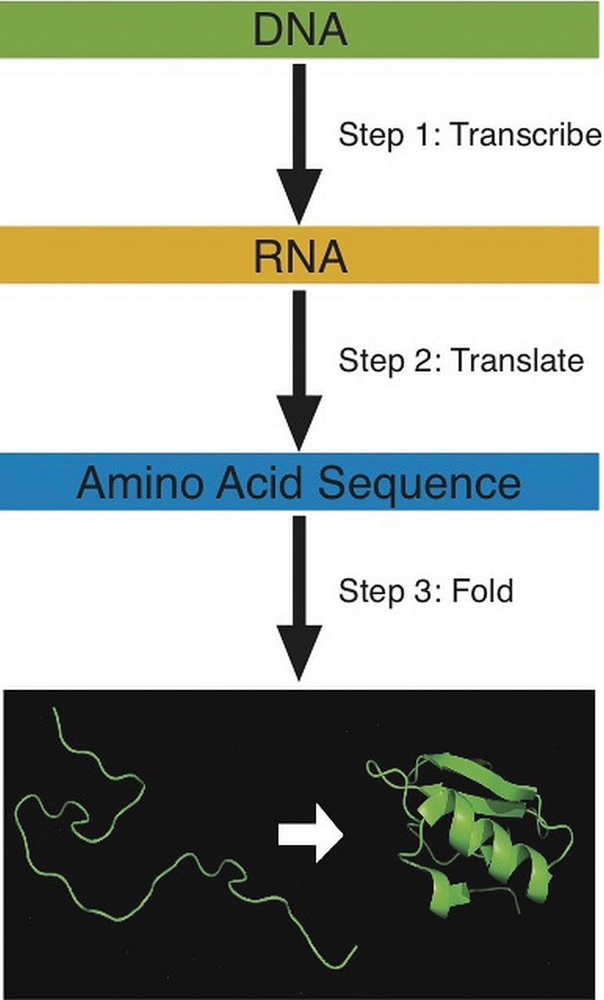
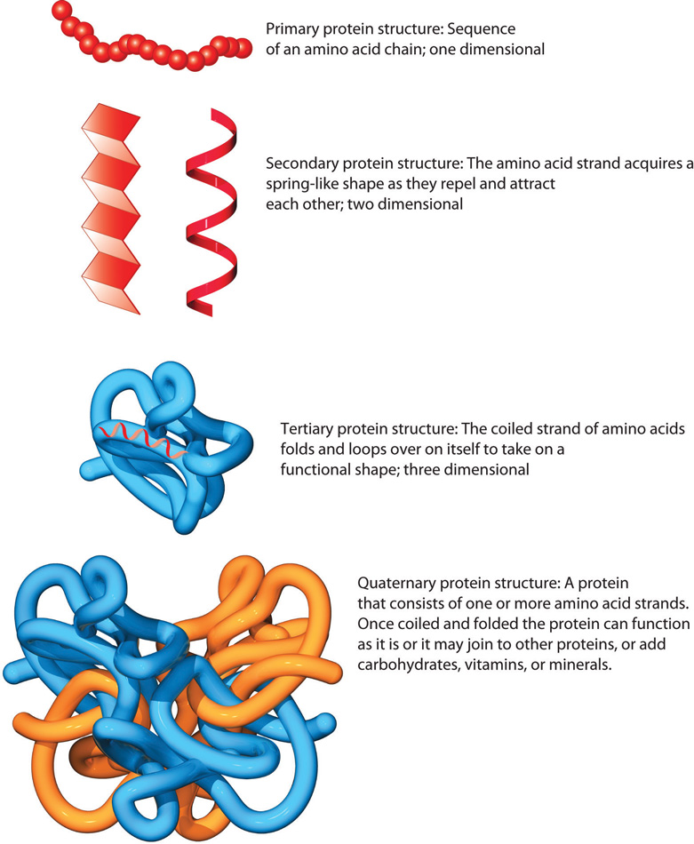

Protein makes up approximately 20 percent of the human body and is present in every single cell. The word protein is a Greek word, meaning “of utmost importance.” Proteins are called the workhorses of life as they provide the body with structure and perform a vast array of functions. You can stand, walk, run, skate, swim, and more because of your protein-rich muscles. Protein is necessary for proper immune system function, digestion, and hair and nail growth, and is involved in numerous other body functions. In fact, it is estimated that more than one hundred thousand different proteins exist within the human body. In this chapter you will learn about the components of protein, the important roles that protein serves within the body, how the body uses protein, the risks and consequences associated with too much or too little protein, and where to find healthy sources of it in your diet.
ProteinsMacromolecules composed of monomeric subunits, called amino acids., simply put, are macromolecules composed of amino acids. Amino acidsSimple monomers composed of the elements carbon, oxygen, hydrogen, and nitrogen. are commonly called protein’s building blocks. Proteins are crucial for the nourishment, renewal, and continuance of life. Proteins contain the elements carbon, hydrogen, and oxygen just as carbohydrates and lipids do, but proteins are the only macronutrient that contains nitrogen. In each amino acid the elements are arranged into a specific conformation around a carbon center. Each amino acid consists of a central carbon atom connected to a side chain, a hydrogen, a nitrogen-containing amino group, a carboxylic acid group—hence the name “amino acid.” Amino acids differ from each other by which specific side chain is bonded to the carbon center.
Figure 6.1 Amino Acid Structure
Amino acids contain four elements. The arrangement of elements around the carbon center is the same for all amino acids. Only the side chain (R) differs.
The side chain of an amino acid, sometimes called the “R” group, can be as simple as one hydrogen bonded to the carbon center, or as complex as a six-carbon ring bonded to the carbon center. Although each side chain of the twenty amino acids is unique, there are some chemical likenesses among them. Therefore, they can be classified into four different groups (Figure 6.2). These are nonpolar, polar, acidic, and basic.
Figure 6.2
Amino acids are classified into four groups. These are nonpolar, polar, acidic, and basic.
Amino acids are further classified based on nutritional aspects. Recall that there are twenty different amino acids, and we require all of them to make the many different proteins found throughout the body (Table 6.1 "Essential and Nonessential Amino Acids"). Eleven of these are called nonessential amino acidsAmino acids that are made in the human body. because the body can synthesize them. However, nine of the amino acids are called essential amino acidsAmino acids that are not made by humans and must be obtained from the diet. because we cannot synthesize them either at all or in sufficient amounts. These must be obtained from the diet. Sometimes during infancy, growth, and in diseased states the body cannot synthesize enough of some of the nonessential amino acids and more of them are required in the diet. These types of amino acids are called conditionally essential amino acidsAmino acids that become essential during certain times in life, such as child growth.. The nutritional value of a protein is dependent on what amino acids it contains and in what quantities.
Table 6.1 Essential and Nonessential Amino Acids
| Essential | Nonessential |
|---|---|
| Histidine | Alanine |
| Isoleucine | Arginine* |
| Leucine | Asparagine |
| Lysine | Aspartic acid |
| Methionine | Cysteine* |
| Phenylalanine | Glutamic acid |
| Threonine | Glutamine* |
| Tryptophan | Glycine* |
| Valine | Proline* |
| Serine | |
| Tyrosine* | |
| *Conditionally essential | |
As discussed, there are over one hundred thousand different proteins in the human body. Different proteins are produced because there are twenty types of naturally occurring amino acids that are combined in unique sequences. Additionally, proteins come in many different sizes. The hormone insulin, which regulates blood glucose, is composed of only fifty-one amino acids; whereas collagen, a protein that acts like glue between cells, consists of more than one thousand amino acids. Titin is the largest known protein. It accounts for the elasticity of muscles, and consists of more than twenty-five thousand amino acids! The abundant variations of proteins are due to the unending number of amino acid sequences that can be formed. To compare how so many different proteins can be designed from only twenty amino acids, think about music. All of the music that exists in the world has been derived from a basic set of seven notes C, D, E, F, G, A, B and variations thereof. As a result, there is a vast array of music and songs all composed of specific sequences from these basic musical notes. Similarly, the twenty amino acids can be linked together in an extraordinary number of sequences, much more than are possible for the seven musical notes to create songs. As a result, there are enormous variations and potential amino acid sequences that can be created. For example, if an amino acid sequence for a protein is 104 amino acids long the possible combinations of amino acid sequences is equal to 20104, which is 2 followed by 135 zeros!
The building of a protein consists of a complex series of chemical reactions that can be summarized into three basic steps: transcriptionProcess of copying DNA into messenger RNA., translationProcess of decoding messenger RNA and synthesizing a protein., and protein foldingA sequence of amino acids transforms into its dictated shape. (Figure 6.3). The first step in constructing a protein is the transcription (copying) of the genetic information in double-stranded deoxyribonucleic acid (DNA) into the single-stranded, messenger macromolecule ribonucleic acid (RNA). RNA is chemically similar to DNA, but has two differences; one is that its backbone uses the sugar ribose and not deoxyribose; and two, it contains the nucleotide base uracil, and not thymidine. The RNA that is transcribed from a given piece of DNA contains the same information as that DNA, but it is now in a form that can be read by the cellular protein manufacturer known as the ribosome. Next, the RNA instructs the cells to gather all the necessary amino acids and add them to the growing protein chain in a very specific order. This process is referred to as translation. The decoding of genetic information to synthesize a protein is the central foundation of modern biology.
Figure 6.3
Building a protein involves three steps: transcription, translation, and folding.
During translation each amino acid is connected to the next amino acid by a special chemical bond called a peptide bondThe chemical bond that connects amino acids in a sequence. (Figure 6.4). The peptide bond forms between the carboxylic acid group of one amino acid and the amino group of another, releasing a molecule of water. The third step in protein production involves folding it into its correct shape. Specific amino acid sequences contain all the information necessary to spontaneously fold into a particular shape. A change in the amino acid sequence will cause a change in protein shape. Each protein in the human body differs in its amino acid sequence and consequently, its shape. The newly synthesized protein is structured to perform a particular function in a cell. A protein made with an incorrectly placed amino acid may not function properly and this can sometimes cause disease.
Figure 6.4

Connecting amino acids with peptide bonds builds proteins. In the process of translation, amino acids are sequentially strung along in a chain in a specific sequence that spontaneously folds into the correct protein shape.
Protein’s structure enables it to perform a variety of functions. Proteins are similar to carbohydrates and lipids in that they are polymers of simple repeating units; however, proteins are much more structurally complex. In contrast to carbohydrates, which have identical repeating units, proteins are made up of amino acids that are different from one another. Furthermore, a protein is organized into four different structural levels (Figure 6.5). The first level is the one-dimensional sequence of amino acids that are held together by peptide bonds. Carbohydrates and lipids also are one-dimensional sequences of their respective monomers, which may be branched, coiled, fibrous, or globular, but their conformation is much more random and is not organized by their sequence of monomers. In contrast, the two-dimensional level of protein structure is dependent on the chemical interactions between amino acids, which cause the protein to fold into a specific shape, such as a helix (like a coiled spring) or sheet. The third level of protein structure is three-dimensional. As the different side chains of amino acids chemically interact, they either repel or attract each other, resulting in the coiled structure. Thus, the specific sequence of amino acids in a protein directs the protein to fold into a specific, organized shape. The fourth level of structure (also known as its “quaternary” structure) is achieved when protein fragments called peptides combine to make one larger functional protein. The protein hemoglobin is an example of a protein that has quaternary structure. It is composed of four peptides that bond together to form a functional oxygen carrier. A protein’s structure also influences its nutritional quality. Large fibrous protein structures are more difficult to digest than smaller proteins and some, such as keratin, are indigestible. Because digestion of some fibrous proteins is incomplete, not all of the amino acids are absorbed and available for the body to utilize, thereby decreasing their nutritional value.
Figure 6.5
A protein has four different structural levels.
From DNA to Protein
(click to see video)See the process of building a protein in real time in this animation.
There are over four thousand diseases caused by incorrectly built protein. Find out more about how one incorrectly placed amino acid causes the disease sickle cell anemia by watching this animation.